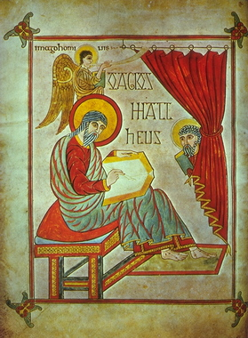

Debate: The Synod of Whitby
Proposition:
The Irish church should conform to the practice of Rome
Remember:
you will be called upon to answer at
least one of the questions as part of the debate; you may (should) also
take
part in other parts if you have things to say that differ from what
your
teammates have said.
Team 1:
argue for the Proposition
Team 2:
argue against the Proposition
Assigned
questions - Team 1:
1. Background
- what is a tonsure, what
does it symbolize, and what were the two different types that they were
arguing
about?
2. Background
- who was Bede, why does he
describe the Synod, and which side was he on?
3. Background
- what was Whitby? why did the synod take
place there?
4. Presentation
of the proposition: what is the topic? what is the basis of your argument?
5. Arguments
- select one significant
sentence from Bede's or Eddius Stephanus' account that favors your
side, and
explain what it means
6. Arguments
- select one significant
sentence from Bede's or Eddius Stephanus' account that favors your
side, and
explain what it means
7. Arguments
- select one significant
sentence from Bede's or Eddius Stephanus' account that favors your
side, and
explain what it means.
8. Do
the summary, summarizing your team's
arguments and state why they are preferable (you can't do this ahead of
time).
Assigned
questions - Team 2:
1. Background
- how is the date of Easter
calculated? why was it
controversial?
2. Background
- who was King Oswy? why did the conflict
between Irish and
Romans matter to him?
3. Background
- who were Wilfrid and
Colman? Why was each qualified to
argue on each side?
4. Presentation
of the proposition: what is the topic? what is the basis of your argument?
5. Arguments
- select one significant
sentence from Bede's or Eddius Stephanus' account that favors your
side, and
explain what it means
6. Arguments
- select one significant
sentence from Bede's or Eddius Stephanus' account that favors your
side, and
explain what it means
7. Arguments
- select one significant
sentence from Bede's or Eddius Stephanus' account that favors your
side, and
explain what it means
8. Do
the summary, summarizing your team's
arguments and state why they are preferable (you can't do this ahead of
time).
Primary source
evidence
The main account that
we have of
the Synod of Whitby comes from the Anglo-Saxon historian Bede's Historia
Ecclesiastica, written around
730. The relevant passages can be found
online (see ch. XXV and the beginning of XXVI; note that in this
translation,
'Scots' means the Irish side):
http://www.fordham.edu/halsall/basis/bede-book3.html
The synod is also described in the biography of Wilfrid written by Eddius Stephanus (ch. 10) (taken from The Age of Bede, trans. J. F. Webb):
On a certain occasion while Colman was Bishop of York and metropolitan archbishop, during the reign of Oswy and Alhfrith, abbots, priests, and clerics of every rank gathered at Whitby Abbey in the presence of the most holy Abbess Hilda, the two kings and Bishops Colman and Agilberht, to discuss the proper time for celebrating Easter: whether the practice of the British, Scots, and the northern province of keeping it on the Sunday between the fourteenth and twenty-second day of the moon was correct or whether they ought to give way to the Roman plan for fixing it for the Sunday between the fifteenth and twenty-first days of the moon. Bishop Colman, as was proper, was given the first chance to state his case. He spoke with complete confidence, as follows:
"Our fathers and theirs before them, clearly inspired by the Holy spirit, as was Columba, stipulated that Easter Sunday should be celebrated on the fourteenth day of the moon if that day were a Sunday, following the example of St. John the Evangelist, 'who leaned on the Lord's breast at supper', the disciple whom Jesus loved. He celebrated Easter on the fourteenth day of the moon, as did his disciples, and Polycarp and his disciples, and as we do on their authority. Out of respect for our fathers we dare not change, nor do we have the least desire to do so. I have spoken for our party. Now let us hear your side of the question."
Agilberht, the foreign prelate, and his priest Agatho bade St. Wilfrid, priest and abbot, use his winning eloquence to epxress in his own words the case of the Roman Church and Apostolic See. His speech was, as usual, humble.
"This question has already been admirably treated by a gathering of our most holy and learned fathers, three hundred and eighteen strong, at Nicaea, a city in Bythinia. Among other things they decided upon a lunar cycle recurring every nineteen years. This cycle gives no room for celebrating Easter on the fourteenth day of the moon. This is the rule followed by the Apostolic See and by nearly the whole world. At the end of the decrees of the fathers of Nicaea come these words: 'Let him who condemns any one of these decrees be anathema.'"
At the end of Wilfrid's speech Oswy asked them, with a smile on his face, "tell me, which is greater in the Kingdom of Heaven, Columba or the apostle Peter?"
Then the whole synod with one voice and one accord cried: "The Lord Himself settled this question when He declared: 'Thou art Peter and upon this rock I will build my Church and the gates of hell shall not prevail against it. And I will giv eyou the keys of the Kingdom of Heaven; and whatsoever thou shalt bind on earth shall be bound in Heaven and whatsoever thou shalt loose on earth shall be loosed in Heaven.'" [Matthew 16:18-19].
To this the king added, showing his wisdom: "He is the keeper of the door and the keys. I will neither enter into strife and controversy with him, nor will I condone any who do. As long as I live I shall abide by his every decision."
Bishop Colman was told that if, out of respect for his own country's customs, he should reject the Roman tonsure and method of calculating Easter, he was to resign his see in favour of another and better candidate. This he did.
[[and guess who that better candidate was???? Wilfrid, of course!]]
Links to information on the Synod of Whitby
There is a lot of junk out on the internet! The following are sites about the Synod of Whitby, Bede, etc. that are not too bad.
http://www.wilfrid.com/Wilfrid_pilgrimage/Whitby_synod.htm